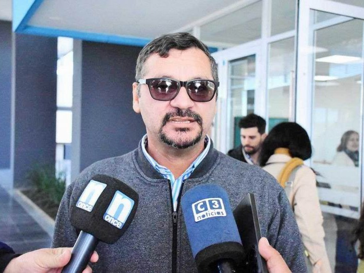

Reseña Historica
En el mes de julio del año 2013, cuando comenzó a pensarse en la posibilidad de creación de un Polo Científico, Tecnológico y de Innovación -PCTI- en proximidades de la ciudad de Formosa, comenzó a discutirse la posibilidad de armar trayectos formativos y de capacitación, que se podrían generar en torno a dicho espacio.
Luego de concretarse la audiencia pública para el establecimiento del PCTI, se generó una propuesta de formación que iría paralela al desarrollo del Polo; acorde con las necesidades de la provincia y las demandas del mercado. Se advirtió que, las características del proyecto implicaría la creación de un instituto tecnológico, que incluyera diferentes proyectos educativos donde la teoría y la práctica estén en consonancia.
Inmediatamente, como parte de los cursos, talleres, espacios de capacitación y carreras, surgió la idea de una tecnicatura superior en Mecatrónica. Esta tecnicatura debería tener un plan de formación que combinara conocimientos de las ciencias básicas, la electrónica, mecánica e informática; de manera que permitiera a los egresados, integrar grupos de trabajo en el área de la producción, el control y la operación de equipos y maquinas industriales.
El trabajo posterior, consistió en explorar los planes de estudio de las pocas instituciones que dictaban la propuesta, en nuestro país. Y posibilidades de establecer nexos con especialistas en el tema.
Durante el año 2014, con ideas más firmes y definiciones acerca del perfil del egresado que se deseaba; se analizaron diferentes propuestas curriculares de nuestro país y de instituciones extranjeras. Simultáneamente se tomó contacto con egresados de otras universidades y especialistas que pudieran aconsejar sobre la organización de la carrera
La Mecatrónica es un área que integra varias disciplinas como la electrónica, la mecánica, el control automático y las tecnologías de la información. Gracias a esta integración sinérgica, es posible diseñar y construir sistemas electromecánicos inteligentes; además permite resolver problemas industriales, científicos y tecnológicos utilizando un enfoque multidisciplinario que favorece la innovación tecnológica.
Hacia fines del año 2016 y durante el año 2017, se trabajó con personal de la Dirección de Educación Técnica de la provincia de Formosa y con el Ingeniero Petzl del INET, para generar los estándares de la Tecnicatura en Mecatrónica. Se sumó al equipo, el formoseño Francisco Pielmann que tenía experiencia en el tema y se había formado en la UTN Córdoba; asesorados por personal del Ministerio de Educación sobre los planes de estudios de carreras técnicas, se fue dando forma a un documento base, que se sometió posteriormente a discusión con las autoridades locales de planeamiento educativo.
En este marco, el 31 de enero del año 2018, por decreto provincial N° 18/2018 se creó el Instituto Politécnico Formosa, pensado como una institución educativa de avanzada orientada a desarrollar procesos sistemáticos de formación que articulen el estudio y el trabajo, la investigación y la producción; así como la complementación teórico ? práctica. Esta iniciativa respondió a la necesidad de formar técnicos que integren equipos de trabajo, que desarrollen actividades en la producción industrial, la prestación de servicios de alta tecnología y sectores vinculados a la misma.
En el seno de este instituto, se organizó la Tecnicatura, cuyas Bases para el Diseño Curricular, se redactaron, luego de varias sesiones de trabajo y reuniones con las autoridades provinciales de varios sectores.
La propuesta educativa considera una cursada de tres años y a partir de su graduación, los egresados pueden configurar y supervisar el montaje, funcionamiento y control de equipos, sistemas e instalaciones de automatización mecánica, neumática e hidráulica, eléctrica y electrónica de bienes y servicios industriales, siguiendo los protocolos de calidad y seguridad. Pudiendo además, plantear nuevas configuraciones y optimizaciones de procesos como así también diseñar nuevos sistemas.
Todo el proceso de diseño del proyecto, estuvo acompañado de entrevistas a especialistas, a posibles docentes de la carrera y de gestiones para la obtención del equipamiento necesario para implementar la tecnicatura en la ciudad de Formosa.
Las clases de la Tecnicatura Superior en Mecatrónica se iniciaron el 19 de marzo del 2018, en las instalaciones de la EPET N° 1, con cuarenta alumnos.
Mision y Vision
Promover la investigación, el desarrollo tecnológico y la aplicación práctica del conocimiento científico, fomentando la radicación de empresas de base tecnológica...
Constituirse como un espacio de vanguardia que conecta el conocimiento científico con la producción, orientando a la provincia de Formosa hacia la innovación constante...
Estructura Organizativa
- Secretaría de Ciencia y Tecnología: Autoridad rectora que define las políticas estratégicas y gestiona el desarrollo del complejo.
- Instituto Politécnico Formosa (IPF): Pilar académico responsable de la formación de técnicos especializados en Mecatrónica, Software y Telecomunicaciones.
- Sector Socio-Productivo: Integrado por laboratorios de investigación y empresas tecnológicas que transforman el conocimiento en producción regional.
AutoridadesAutoridades IPF

Director
Dr. Horacio Adrián Gorostegui
Directora de Carreras
Dra. Alicia Noemí Alcaraz